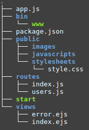

Lesson 8: Making a Server
Setup
First we need to install a few tools to get a platform where we can make a server. Install NodeJS to get JavaScript locally running on your computer. This provides two new commands we can use in out terminal to make applications.
The first new command is node. Typing in node by itself gives you something like the console in your browser to test code in. You can also give a filename to node to run the JavaScript code in that file.
node // Open the console
// Ctrl-c twice to exit
// Run code in code.js
node code.js
The second new command is npm. This is the Node Package Manager, where we can install new JavaScript packages and get added capabilities. NodeJS is very barebones, so they make packages as easy to get as possible to actually create applications. We're going to install Express, a popular web server tool, to develop our application.
npm install --global express-generator
This adds another command called express that autogenerates a lot of the files we need for a server.
Now to create a server application:
express -e myfirstserver
This will create a new application in a folder created in the current directory. That application, when run, will accept HTTP requests and send files. It will give the command to run the application when it is generated.
What we have now is technically a fully functioning server, but looking at how it works will be much more important. That way new pages and new capabilities can be added.
Processing a Request
Let's look at what a request goes through when recieved to get a feel for what components need to be modified.
First, the program checks to see if the request is asking for a file in the public folder. If that is the case, the page is sent immediately. This saves a lot of time if a static page is required.
Next, some preprocessing is done with middleware. This extracts cookies, what the request is asking for, any data sent in the request, and any other information needed. The request is then sent by a router to the appropriate function that processes it based on what page it was asking for. For example, if the server has a function for all pages of the form "/test/:id", then a request like http://mypage.com/test/12 will get processed by this function, where req.params.id will be 12. Then the function can do any processing required and create variables to be sent to the user.
Finally, all necessary variables are passed to a template. This template looks a lot like HTML with some extra spaces to put data from variables in before sending the data to the user. Once all the varaibles are inserted, then the result is sent to the user as HTML like a simple page would be.
Project Structure
Now that we have a high level idea of how the server works, we need to go into the individual files. Some of these autogenerated files are best left alone, but specifically the public, routes, and views folders will be heavily modified to create a fully functioning site.